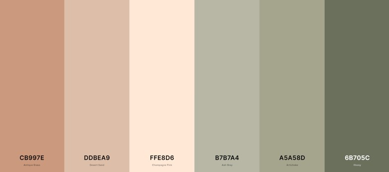
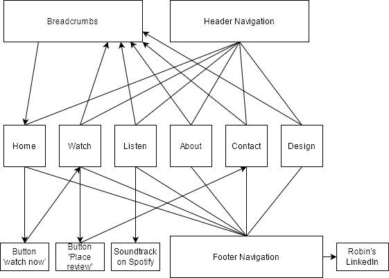

Design Page
We worked on the film ‘A Peculiar Passage’ for about a year. It is my baby in every way. I wanted everything of this film to be of quality: we casting, the costumes, the props, the sets, the music, the poster and now: the website. I wanted to keep the feeling of the film but also make it very accessible to everyone. The film’s target audience isn’t limited to young people so I wanted people of all ages to be able to navigate through the website.
To keep in line with the film’s colour palatte I choose to only apply toned-down colours. No bright red, or blue but toned down greens and beiges. The kind of colours that you could find in a forest. For these I used the website coolors.co. It is vital that colours work together and I found this website to be the perfect tool for that. The final selection consists of “Antique Brass” (CB997E), “Desert Sand” (DDBEA9), “Champagne Pink” (FFE8D6), “Ash Gray” (B7B7A4), “Artichoke” (A5A58D) and “Ebony” (6B705C). Eventually I did not use “Desert Sand” and “Ebony” because six colours instead of four broke the soft, clean view of the website.

The atmosphere of the film also needed to be included in the fonts. For this I used “Rubic” for the general text and “Mate SC” for the headlines. The latter being the more fantasy one to keep the right tone. However, this was to eccentric for the whole website so I needed a softer, more straight-lined font for the overall text. Neither of these fonts are found on the film’s logo (which can be seen on the top-left corner of the website) but were chosen to match with those logo’s. Both fonts were found via Google Fonts.
User Testing
I tested five people for this website. Three females and two males all in the ages between 22 and 27. I specifically asked people that knew something about website development so that I could learn the most from their feedback.
One test was done on an iPhone, one on an android phone, one on a mac laptop, one on a windows laptop and one on an iPad. I wanted to be sure that the site worked on all devices. The person with the iPhone also checked it on her windows laptop and preferred the laptop version. She stated that this was a personal preference and wasn’t connected to the website.
Positive feedback was overall design and use of colours. They stated that the feeling of the website matched with the vibe of the movie and the poster. This also included the fonts, especially the header one which, as stated, was not used in the film or the poster but matched well with what was used there. Nevertheless the paragraph font was also praised for its simplicity. If it was more extravagant it would have been a chaotic website. All five of them liked the reviews with the stars. Showing the faces behind the film was met with positive feedback as well. One stated that it made the overall thing feel more personal. The website was seen as easily to understand and navigate which was strengthened by its clear headings. From the five reviewers, one was a core member of the team that created the film and she stated that is was a very good promotional piece for the film. To her, it felt very complete.
Feedback was given on the lack of interactivity with the logo on the left-top-corner. They would have preferred that it would lead back to the home page. One stated that the outline of the footer as well as the links should be outlined to the left. Another said it did not make a lot of sense to put the “watch” button above the poster because people did not know anything about the film yet. Although they all liked the reviews that were shown, one did notice that it stated “massage” instead of “message”. When you click on “leave review” you go to the contact form but you can’t add to the existing reviews which they though was a shame. After seeing the film, someone stated that they would have liked to see some behind the scenes footage or photographs to be included in the website. Lastly, people would have liked to see Jelle van den Ende, the films composer, to be visible at either the “about” page and/or the “listen” page.
Of course this feedback will not be adjusted to the website for now, because that is not how this assignment is designed. However, if I would apply the given feedback I would take everything into account. With the exception of the feedback that was given on the footer, which is in my opinion a matter of taste, I would apply everything. I am very happy that after so much work people liked the website and were more positive than negative. There is no doubt in my mind that, if I pass this course, this will be the last time in my life that I will create a website but for what it’s worth: I am happy with the result and I did actually learn a fair amount.
Flow Diagram
